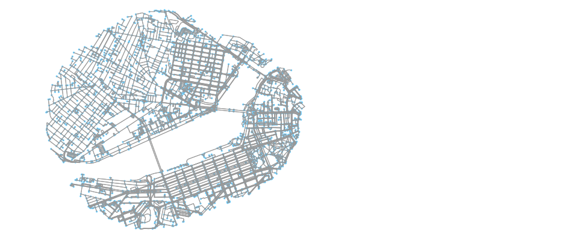

The Remote Sensing course uses Python and Data Science to improve natural disaster relief and recovery.
Throughout the course, students learn to use the Geographic Information System, GIS, to analyze buildings, roads, and networks. When combined with machine learning classification and processing algorithms, students eventually learn how to optimize natural disaster relief and recovery.
fig, ax = ox.plot_graph(walkable_roads_near_mit, figsize=(8,10), node_size=10)

JupyterLab is a cloud-hosted way to run Python in Jupyter Notebooks. In this class, JupyterLab runs a Linux instance in AWS. Sign in to GitHub at https://jupyter.bwsi-remote-sensing.net/hub/spawn to create your own instance.